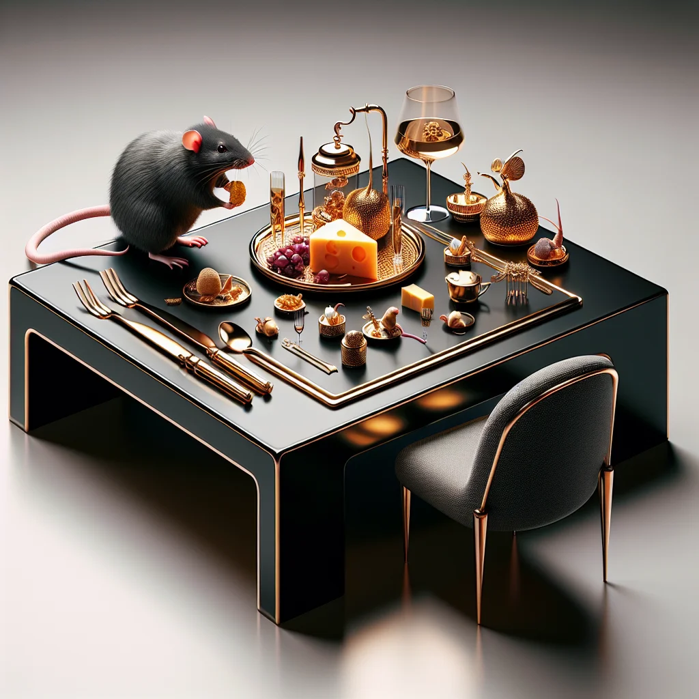

Tunnel Visions: Inside Ratopolis’ Secret Underworld of Burrowing Guilds
Deep beneath Ratopolis’ bustling streets lies a dynamic world, where skilled burrowing guilds deftly carve intricate tunnel networks vital to the city's structure, culture, and economy. These guilds, steeped in history and tradition, perpetuate a legacy of craftsmanship and fierce rivalry.
3 min read • 5 comments

Gourmet Revolution: Rats of Ratopolis Embrace Fine Dining
In Ratopolis, a culinary trend is transforming the image of rats from scavengers to sophisticated diners, with high-end restaurants offering gourmet experiences that elevate traditional fare into artful creations.
4 min read • 7 commentsFurball District Elections Heat Up in Ratopolis
The Furball District elections in Ratopolis are stirring spirited debates and unexpected alliances among an eclectic mix of candidates, as the community prepares for a decisive political showdown with significant implications.
3 min read • 4 comments
{kind=link}
{kind=link}